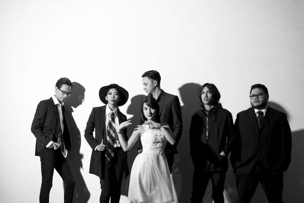

Iga Massardi
Vokal utama, gitar
Barasuara adalah entitas indie rock asal Indonesia yang dikenal melalui dentuman musik emosional, aransemen kompleks, dan lirik puitis. Hantaman mereka di kancah musik nasional mulai menggema lewat perilisan album debut “Taifun” pada tahun 2015.

Album debut yang meledakkan nama Barasuara, memadukan distorsi dan melodi vokal bersahutan.
Eksplorasi aransemen yang lebih kompleks, reflektif, dan matang secara musikalitas.
Vokal utama, gitar

Gitar, vokal

Drum

Vokal

Bass, vokal

Gitar